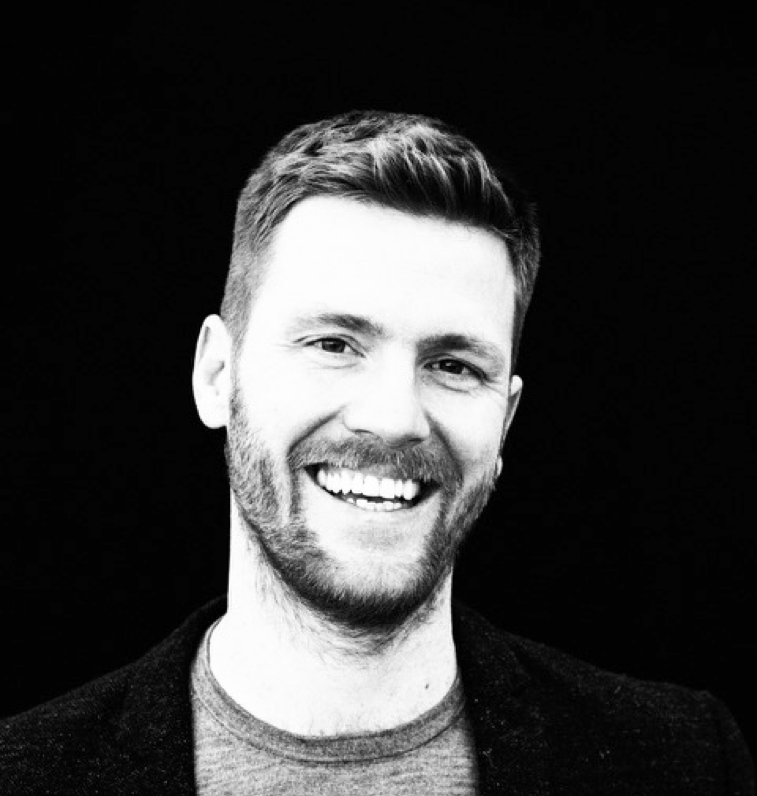

Diego G. Dupouy
Founder · Investor & Advisor
Co-founder and former CTO of Lunaphore, leading the company from idea to acquisition by Bio-Techne.
Experience across R&D, product, commercial strategy, and partnerships in spatial biology.